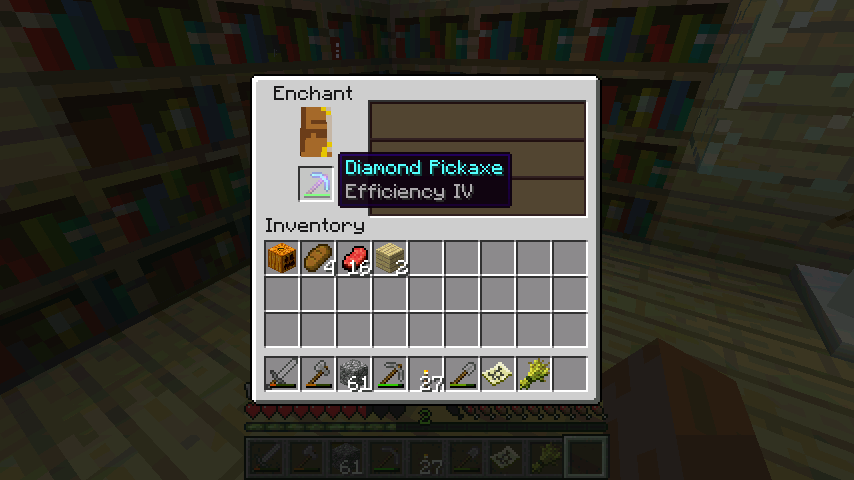

可惜只得到了效率4，最没用的一个附魔
PS 对于钻石稿来说，效率可以用来在end挖黑曜石，unbreaking增加稿子的寿命可以让其他同时存在的附魔更超值，silk touch可以用来回收或者开采一次性放置资源（如玻璃），fortune则是挖矿里面最有用的，增加矿物产量
更多时候附魔钻石稿的目的就是看着fortune，不过根据几率图可见即使是LV30的附魔，出fortune的几率也不过是20%（黄金稿LV30附魔出fortune的几率是30%）
204楼
2012-08-04 16:02